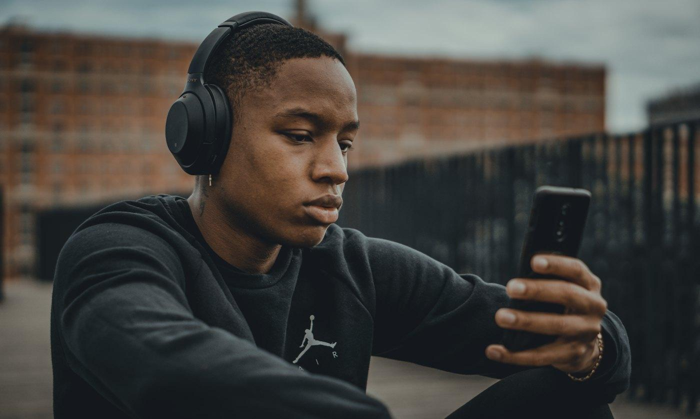

Warm-up · Chain of Ten
Person 1 says one routine sentence with a frequency word. Person 2 repeats it AND adds a new one. Person 3 repeats both and adds a third… How long is our chain? Full sentences only — never a single word.
Group: go around the class in a fixed order. Max 6 people per chain — then start chain 2.
1:1: you and the teacher take turns. The teacher adds a sentence, you repeat all and add yours.
Need an idea? Pick a photo
Teacher notes · §1 Warm-up
Pedagógica
- VOC-06 (ESCALADA): cada quien repite TODAS las oraciones anteriores en orden y agrega la suya. Solo cuenta si son oraciones completas con adverbio o expresión de frecuencia.
- No corrijas durante la cadena: si alguien olvida una oración o la dice muy mal, la cadena se rompe, guardas el récord y empieza otra.
- Grupo: máximo 6 por cadena (si no, se hace eterna); con más alumnos, haz 2 cadenas y compara. 1:1: tú y el alumno alternan; tú metes "she / he" para obligar la -s.
Engagement
- Cierra en voz alta: "The group record is __ links." Ese número se vuelve a retar en S16.
- Si la cadena llega a 10, celebra y pide una ronda "en tercera persona": "Ana always gets up at six, Luis…".
Crecimiento
- Anota qué estructura rompe la cadena (normalmente la -s de he/she o el orden del adverbio). Es tu primer dato diagnóstico del quiz.
Part A · Listening — Small world!
Your scoreboard

Mia calls Ollie, an old classmate. Listen to the whole call twice. Don't read — listen!
Tap the cards that are NOT true. The last card standing is your answer.
Teacher notes · §2 Part A
Pedagógica
- Guion palabra por palabra de la ficha. Voces: MIA mujer, OLLIE hombre, ambos inglés australiano nativo, velocidad lenta. El "phone beep" de la ficha es solo efecto, no se lee.
- Desviación aprobada: la primera línea de Mia cambia a "Small world — long time no see!" (la ficha decía "I don't see you since school!", que es un calco y un error que un nativo no dice).
- Dos escuchas completas ANTES de tachar. LIS-13 es eliminación: el alumno tacha las tarjetas falsas; si intenta tachar la correcta, la tarjeta rebota y el reactivo ya no cuenta como primer intento.
Engagement
- Grupo: el alumno dice en voz alta "It's NOT ___ because…" antes de tachar. 1:1: el alumno explica cada tachón.
- Cierre: "Part A: __ of 5."
Crecimiento
- La transcripción se muestra solo DESPUÉS de terminar los 5 reactivos. Úsala para señalar "still", "twice a week", "usually" y el repair chunk de Mia.
Part B · Vocabulary
Say the full sentence out loud, then click
Teacher notes · §3 Part B
Pedagógica
- Reactivos exactamente como la ficha. Regla: el alumno dice la oración completa en voz alta antes del clic; al acertar se escucha el modelo.
- Trampa del 1: "anymore" solo va en negativo ("I don't live there anymore").
- Ítem 2: el ícono del reloj con 0% = never. Ítem 4: el calendario con 2 días marcados en el mes.
Engagement
- Cierre en voz alta: "Part B: __ of 5." Nadie gana por rapidez: el que piensa más, cuenta igual.
Crecimiento
- Si fallan el 3 (often/many/much), recuerda que "How often" es UNA pieza para frecuencia — vuelve en el checkpoint oral.
Part C · Language — Picture Truth
Look at the photo and read the sentence. Is it TRUE — correct, real English? Or FALSE — an impostor? If it's false, choose the correct sentence and say it out loud.
True or false?
Teacher notes · §4 Part C
Pedagógica
- GRM-13 (IMPOSTOR): la foto es real; la pregunta es si la oración es inglés correcto. En la ficha las 5 son FALSE: está bien, el reto es encontrar y corregir el error.
- Punto solo si marca FALSE y elige la corrección al primer intento. Pide que lea la corrección en voz alta antes del clic.
- Errores meta: -s de he/she, Does con he/she, once (no "one time"), doesn't (no "don't") y el auxiliar en How often.
Engagement
- Grupo: equipos votan TRUE/FALSE a la cuenta de 3 con el pulgar. 1:1: el alumno explica POR QUÉ es impostor en español si lo necesita, pero corrige en inglés.
- Cierre: "Part C: __ of 5 impostors caught."
Crecimiento
- Anota qué error repite cada alumno; es el foco "Next" del feedback (§7).
Part D · Reading — Diego & Ana


What do Diego and Ana say?
Quiz total
Teacher notes · §5 Part D
Pedagógica
- Texto exacto de la ficha. Primera lectura en silencio (1 min); segunda en voz alta en parejas, un mensaje cada uno.
- Las preguntas abiertas de la ficha se convirtieron en opción múltiple de 3; la correcta es la respuesta de la ficha. Pide que la digan completa antes del clic.
- Trampa: "hardly ever miss" = casi nunca falta. Y Ana "doesn't exercise much", no "never".
Engagement
- Cierre del quiz en voz alta: "Quiz total: __ of 20." Celebra el resultado del grupo, no el individual.
Crecimiento
- Registra en el portal la puntuación por parte (A, B, C, D). La parte más baja es el foco de repaso al inicio de S09.
Oral Checkpoint · 30-Second Me
Básico 1 ended at 90 s. Today we start again — with harder rules.
Today's 90 seconds is your new Básico 2 baseline. Same time as Básico 1, but now it must have quality: no long pauses, a frequency word and a do/does question.
Me, my people, my week
Talk for 90 seconds — no pause longer than 4 seconds
GOAL 90 s
Silence now: 0.0 s
Log
- No attempts yet.
Catch-Up Call

A calls B, an old classmate. Catch up on your lives today — present simple only.
Group: pairs in breakout rooms, 3 minutes per call, then swap roles.
1:1: the student is A, the teacher is B. Then swap.
A · The caller
- Say hello + "Small world!"
- Describe your life now (present simple)
- Use 1 frequency word
- Ask 1 do/does question
- Use 1 repair chunk
B · The old classmate
- Answer and ask back
- Halfway: give your surprise news
- Don't say it twice — wait for A to ask!
A must answer: "Sorry, can you repeat that?"
Teacher scores 1–4 per criterion
0 / 20Teacher notes · §6 Checkpoint
Pedagógica
- SPK-18 (CONTRARRELOJ) cuenta HACIA ARRIBA. Meta: 90 s con calidad: sin pausa > 4 s (tú presionas "Silence" cuando calla y otra vez cuando retoma), ≥1 adverbio de frecuencia y ≥1 pregunta con do/does dicha por el alumno.
- Dos intentos máximo por alumno; se guarda el mejor intento válido. Grupo: mientras uno habla, los demás cuentan adverbios con los dedos. 1:1: el alumno hace 2 intentos y compara.
- Catch-Up Call: el giro es OBLIGATORIO. B da la noticia a mitad de la llamada; A debe usar "Sorry, can you repeat that?". Si A no lo usa, B la repite una vez más rápido.
- Rúbrica: 1 = con mucha ayuda · 2 = con modelo a la vista · 3 = solo, con errores que no rompen · 4 = solo y natural.
Engagement
- Cierra en voz alta: "__: 90 seconds, baseline set!" o "__: __ seconds — your baseline for S16."
- La escalera 90 → 100 → 115 → 130 queda visible: el alumno ve hacia dónde va.
Crecimiento
- Registra en el portal: segundos, cumplimiento de las 3 condiciones y rúbrica /20. Esta es la línea base de Básico 2, comparable con el récord final de 90 s de Básico 1.
- Mide sin tecnicismos: no corrijas durante el intento; anota y devuelve en §7.
Feedback · Then — Now — Next

Then
- End of Básico 1: 90 seconds — time only.
- Present simple with I / you / we / they, and he/she + -s.
Now
- Quiz A–D: — / 20
- Oral rubric: — / 20
- Catch-Up Call: — / 6
Next
- S16 checkpoint: 100 seconds with the same quality rules.
- Block 2: what you do NOW, not always.
After Block 1, I can…
Block 1 done: you can talk about your routines, ask how often, and repair a conversation.
Practice: record your 30-Second Me on your phone once this week — "Me, my people, my week" — and listen for long pauses. Next: Session 9 · What Are You Doing Right Now?
Teacher notes · §7 Feedback
Pedagógica
- Then–Now–Next: el alumno dice en voz alta una frase por columna. "Now" se llena solo con los datos del quiz y del checkpoint.
- Máximo 2 aciertos y 2 correcciones de alto valor (las que más se repitieron en Part C y en el checkpoint).
- Grupo: cada quien comparte solo su "Next". 1:1: escriban juntos el "Next" en la caja.
Engagement
- Cierre en voz alta: "Block 1 closed. Baseline: __ seconds. See you at 100 in Session 16."
Crecimiento
- Registra en el portal: quiz /20 por parte, baseline (segundos + condiciones), rúbrica /20 y el foco "Next".
- S09 abre el Bloque 2: presente continuo. Avisa: "Next class: what you are doing RIGHT NOW."